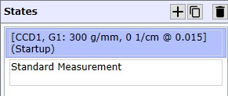
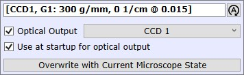
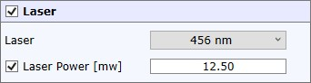
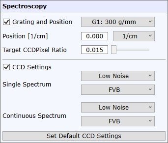
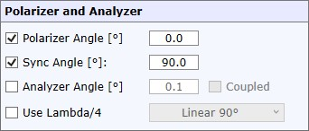

|
状态编辑器
|
添加或删除状态

添加新状态
向状态列表添加新状态。
复制状态
将所选状态复制为新状态。
删除状态
删除所选状态。
状态列表
选择状态进行编辑。
编辑状态

名称编辑
您可以为状态定义自定义名称。
自动名称
根据当前状态设置自动创建名称。
光学输出
如果选中，执行状态时会选择光学输出。
如果选择CCD1/2/3，则在WITec Control中更改配置时，将自动执行该输出最后选择的状态。
启动时用于光学输出
如果选中，在首次选择输出时（包括软件启动时）将执行此状态。
用当前显微镜状态覆盖
用所有设备的当前状态覆盖所有设置。

激光
如果选中，执行状态时将选择所需的激光
激光功率
如果选中，执行状态时将选择所需的激光功率。

光栅和位置
如果选中，执行状态时光谱仪将移动到所需的光栅和位置。
位置可以用波数 [1/cm] 或纳米 [nm] 定义。
目标CCD像素比率定义您希望所需位置在CCD的哪个像素上。
例如，比率 = 0.0，位置 = 200 -> 位置200将位于CCD最左侧像素
例如，比率 = 0.5，位置 = 200 -> 位置200将位于光谱中间
例如，比率 = 1.0，位置 = 200 -> 位置200将位于光谱最右侧像素
CCD设置
如果选中，执行状态时将选择所选的CCD读出和合并模式。
设置默认CCD设置
将所有组合框设置为WITec定义的默认CCD设置。

Polarizer 角度
如果选中，执行状态时将选择所需的偏振器角度。
Sync 角度
如果选中，执行状态时将自动同步偏振器和检偏器之间的角度。
Analyzer 角度
如果选中，执行状态时将选择所需的检偏器角度。
使用 Lambda/4
如果选中，lambda/4板将被标记为已耦合，执行状态时将选择所需位置。